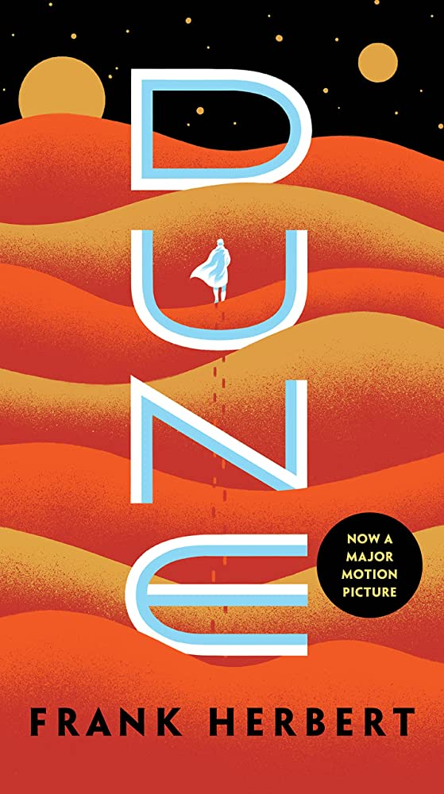
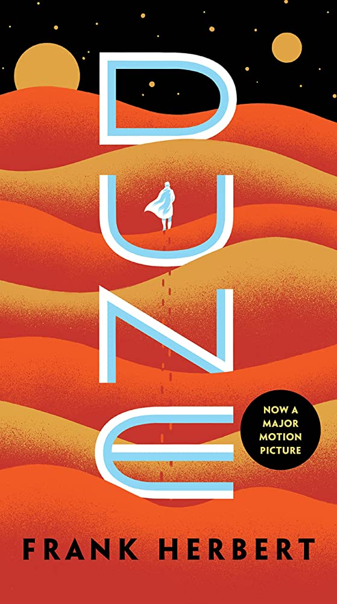

Dune by Frank Herbert
“Dune” by Frank Herbert is a classic science fiction novel set in a distant future.
This is the cover for the novel by Penguin Random House
“Dune” by Frank Herbert is a classic science fiction novel set in a distant future.
This is the cover for the novel by Penguin Random House
